Procedural 3D · Blender Eevee · 2026
依据设定图集 D_星泊豪华大巴房车 全程序化重建：几何由 bpy/bmesh 生成， 材质全部为程序化节点，未导入任何外部模型、贴图或 HDRI。 本轮重点是把外观的颜色与质感对齐主参考图，用取样 + 光学换算做闭环校色， 平均色差从 129/255 收敛到 7.3/255。
上图：设定图 D_01（整车主参考） · 下图：本工程渲染。机位、配色、腰线、下裙、车窗、轮毂逐项对齐。
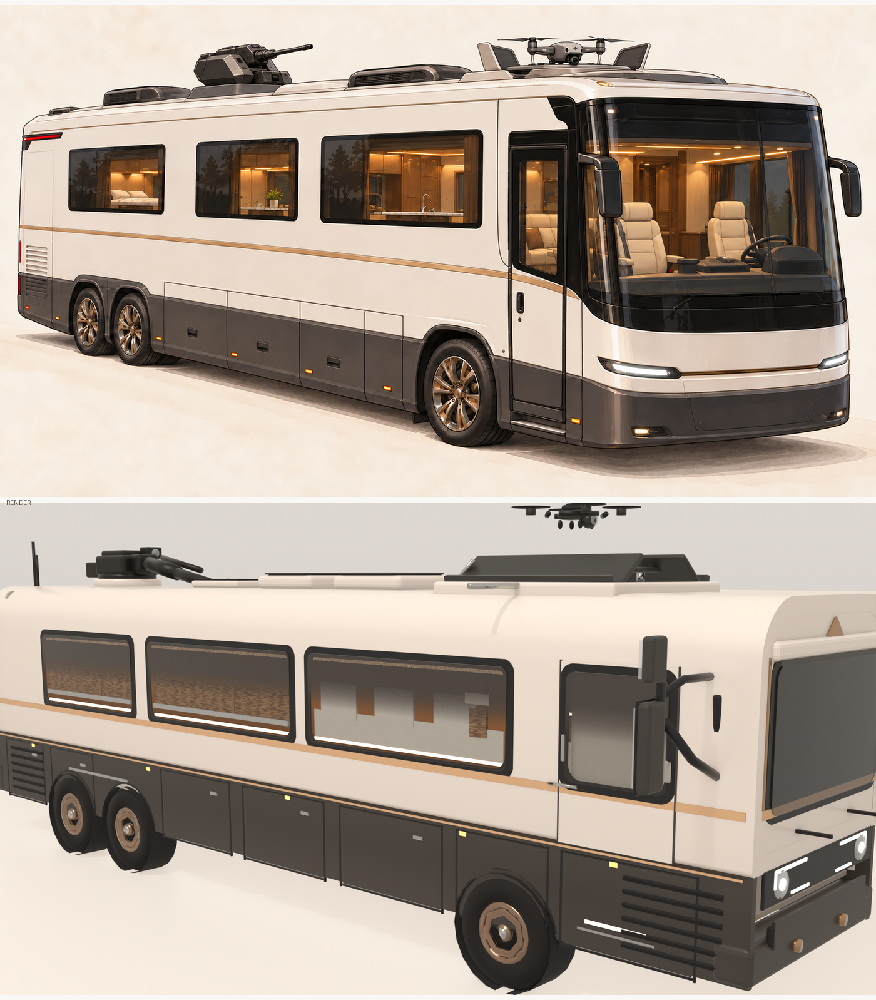
对齐 D_01 的机位：方位角 −48°，仰角 9°，48–50 mm 广角近距，得到参考图那种强透视浅俯视。
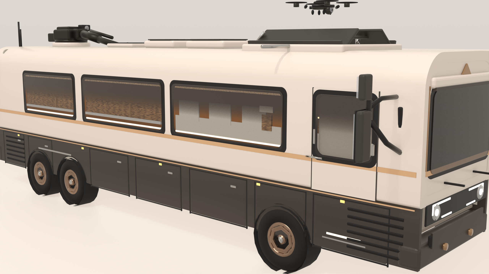
车头、车尾、剖视（内部结构）、底盘仰视（车架 / 发动机 / 悬架 / 传动）、前侧低角。
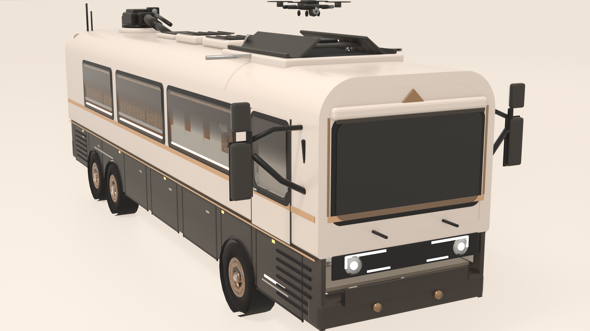
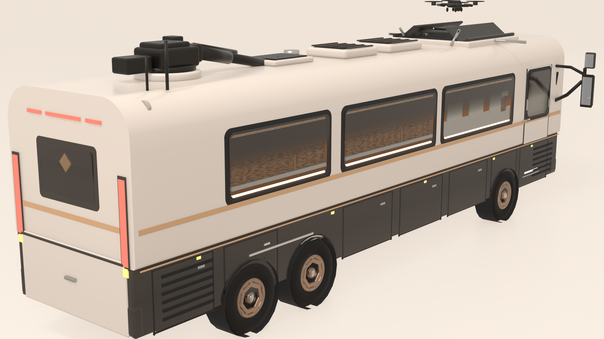
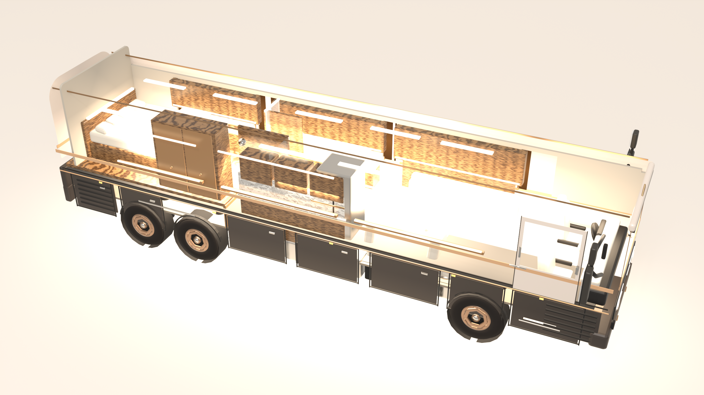
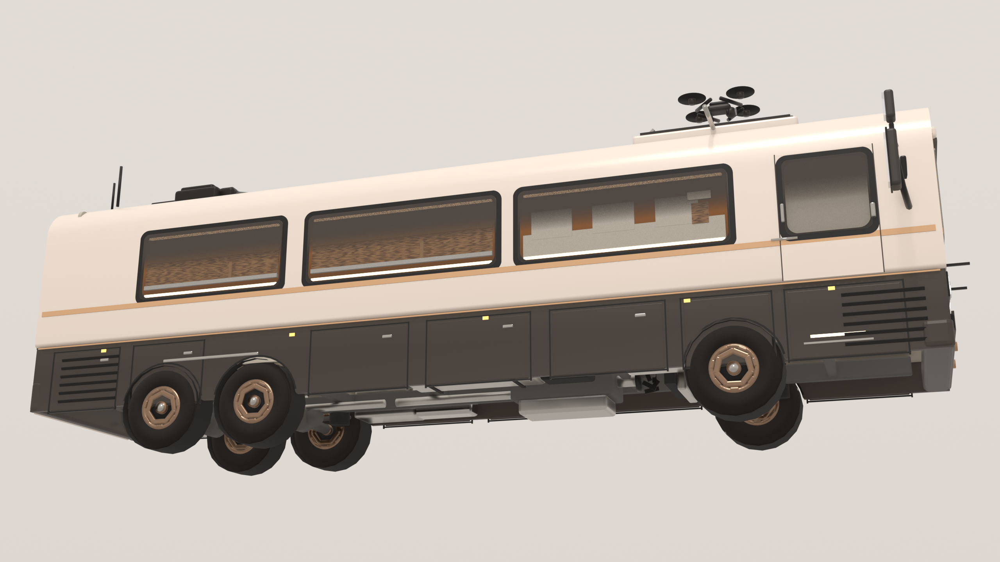
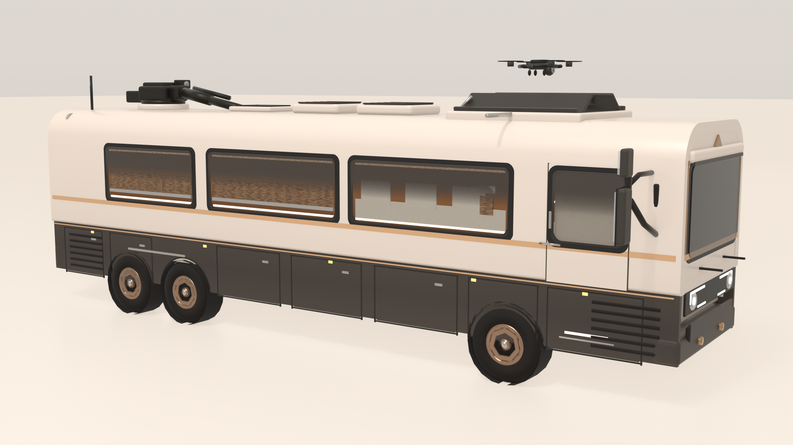
场景由近似均匀的暖奶油环境照明，此时 渲染值 = 反照率 × 环境辐亮度， 所以 albedo = target / ENV。参考图逐点取样 → 反推材质基色 → 渲染后回测色差。
| 部位 | 参考图实测 | 本工程渲染 | Δ |
|---|---|---|---|
| 车身上部 | #EBDCCE | #EBDACB | 1.7 |
| 车身下部 | #ECDACA | #E7D6C7 | 4.0 |
| 腰线（香槟驼） | #CFAB89 | #D7AA80 | 6.0 |
| 下裙（深暖灰） | #574A42 | #4C453F | 6.3 |
| 下裙下缘 | #5C4F48 | #504841 | 8.7 |
| 轮胎 | #302923 | #2A2623 | 3.0 |
| 轮圈（暗青铜） | #8E725D | #876B56 | 7.0 |
| 车窗（暖光内装） | #764620 | #675344 | 21.3 |
| 平均 | 7.3 | ||
33 轮。第 1 帧是初版——车身壳体的拉伸漏传了高度中心，整个车体被建在地面以下， 画面上看到的其实只是前后端盖加内饰。
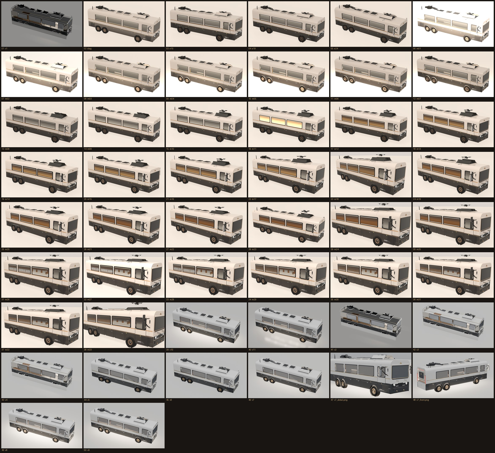
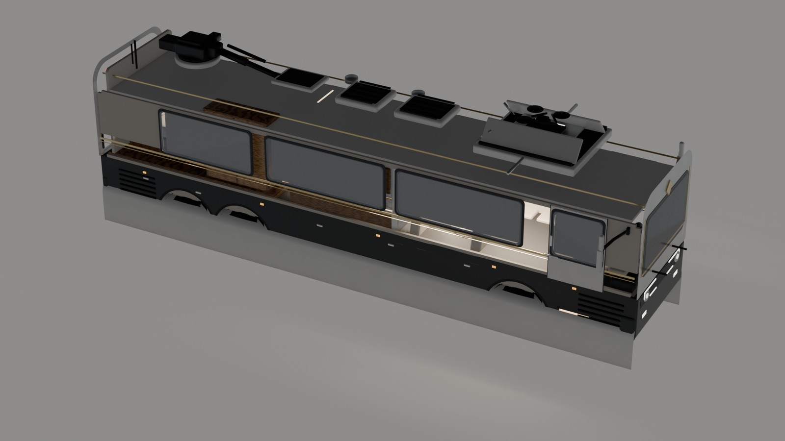
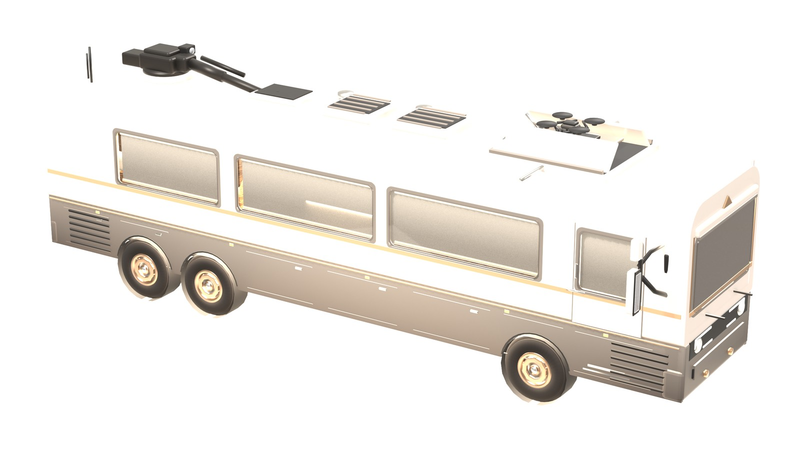
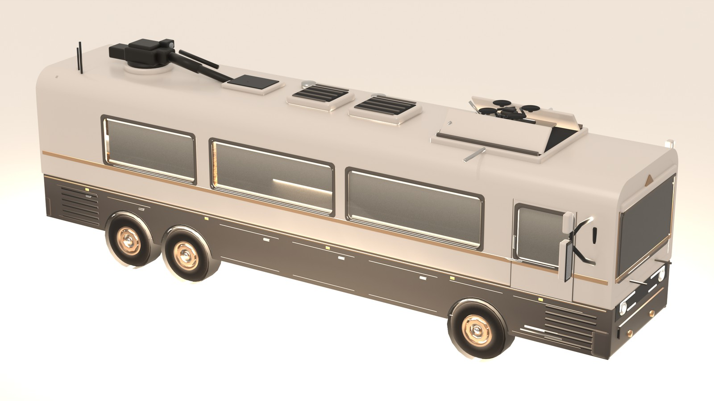
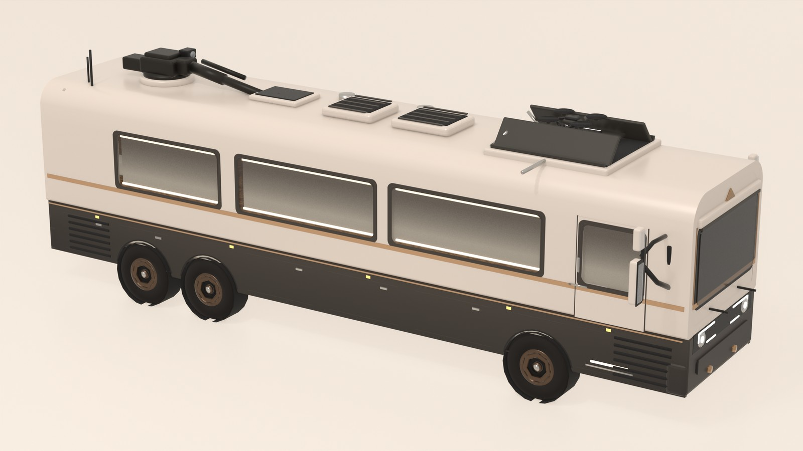
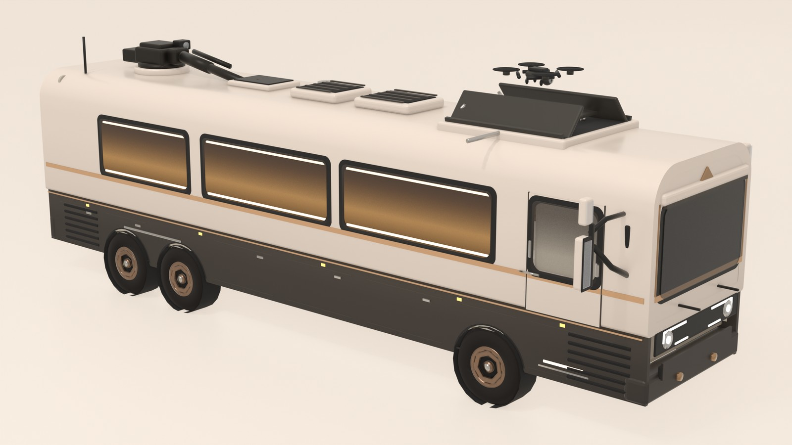
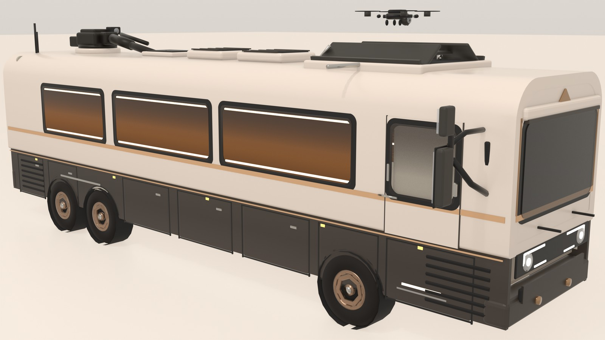
外观对不上，往往不是审美问题，是这几处。
一直用 AgX，它持续压缩与去饱和，颜色怎么调都不对。换成 Standard 后才可控。
按点光公式估瓦数会整体过曝 4 倍。
所有补光都背着主体照，画面发平却看不出原因。
把下裙照得比预期亮约 1.7 倍，直接破坏校色基准。
改动几何或配色只需动对应模块，构建入口统一在 build.py。
| build.py | 入口：-- <tag> <view> [车内灯增益] [仰角] [方位角] [焦距] |
| rv/spec.py | 全部尺寸常量（唯一真源） |
| rv/lib_util.py | 几何原语：loft / ring / band_sweep / revolve_y / flat_cap … |
| rv/lib_mat.py | 程序化材质库，含参考图实测色表 TARGET 与换算 alb() |
| rv/lib_studio.py | 世界梯度 / 奶油摄影棚 / 相对机位布光 / 自动构图 / 像素回读 |
| rv/build_*.py | 车身 / 底盘动力 / 内饰 / 车顶设备 / 灯组细节 |
| tools/match.py | 闭环校色：在参考图与渲染的同一特征点取样比对色差 |
| tools/scan.py · patches.py | 参考图颜色扫描 / 定点取样 |
| tools/bbox.py · stack.py | 主体包围盒测量（反推机位） / 并排对比图 |
| check.py | 几何体检：遍历顶点打印越界对象 |